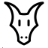

7 free alternatives to Adobe After Effects · 2026
 Quit paying for Adobe After Effects
Quit paying for Adobe After Effects
Adobe After Effects is a subscription app for motion graphics and visual effects. These tools do the same job for free. Project activity and stars are pulled live from GitHub.
Quick picks
Feature comparison
| Tool | Free | Open source | Windows | Mac | Linux | In browser | Phone | Self-host |
|---|---|---|---|---|---|---|---|---|
| Blender | ✓ | ✓ | ✓ | ✓ | ✓ | – | – | – |
| DaVinci Resolve (free version) | ✓ | – | ✓ | ✓ | ✓ | – | – | – |
| ✓ | ✓ | ✓ | ✓ | ✓ | – | – | – | |
| ✓ | ✓ | ✓ | ✓ | ✓ | – | – | – | |
 Glaxnimate | ✓ | ✓ | ✓ | ✓ | ✓ | – | – | – |
| Synfig Studio | ✓ | ✓ | ✓ | ✓ | ✓ | – | – | – |
| ✓ | ✓ | – | – | – | ✓ | – | – |
✓ = available. "Free" means the core app costs nothing; some offer optional paid upgrades.
Activity & licenses
| Tool | Open source | Platforms | GitHub stars | Activity | License |
|---|---|---|---|---|---|
| Blender | Yes | Windows, macOS, Linux | 22.6k | Very active | GPL-2.0+ |
| DaVinci Resolve (free version) | No | Windows, macOS, Linux | — | Closed source | Free (closed source) |
| Yes | Windows, macOS, Linux | 5.8k | Very active | GPL-2.0 | |
| Yes | Windows, macOS, Linux | 2.1k | Very active | GPL-3.0 | |
| Glaxnimate | Yes | Windows, macOS, Linux | — | Open source | GPL-3.0 |
| Synfig Studio | Yes | Windows, macOS, Linux | 2.5k | Very active | GPL-3.0 |
| Yes | Web | 20.5k | Active | MIT |
Stats last updated 2026-11-28.
The alternatives
1Blender
Very activeA complete 3D suite: modeling, animation, rendering, compositing and motion graphics.
Best for: 3D, animation and motion graphics · License: GPL-2.0+ · Source code
2DaVinci Resolve (free version)
Closed sourceA professional editor and color-grading suite with a very capable free tier.
Best for: Professional-grade editing and color · License: Free (closed source)
3 Natron
Natron
Very activeA node-based compositor for visual effects work. Development is slower than in its peak years.
Best for: Node-based VFX compositing · License: GPL-2.0 · Source code
4 Friction
Friction
Very activeA newer 2D motion graphics app focused on vector animation and keyframes.
Best for: 2D motion graphics · License: GPL-3.0 · Source code
5Glaxnimate
Open sourceA vector animation app for motion graphics that can export Lottie animations and GIFs.
Best for: Simple 2D motion graphics and Lottie files · License: GPL-3.0
6Synfig Studio
Very activeVector-based 2D animation with bones and automatic tweening.
Best for: 2D cut-out and vector animation · License: GPL-3.0 · Source code
7 Motion Canvas
Motion Canvas
ActiveCreate animated explainer videos by writing TypeScript code, with a live preview editor.
Best for: Programmers making explainer animations · License: MIT · Source code
Cheaper paid alternatives to Adobe After Effects
Want more than the free options, but for less than Adobe After Effects? These are budget-friendly paid picks. Prices are approximate as of November 2026 and can change, so check the vendor's site.
DaVinci Resolve Studio
One-time purchase, about $295The paid version of Resolve with extra AI tools, effects and higher-resolution exports. Free updates.
 Apple Motion
Apple Motion
One-time purchase, $49.99 (Mac)Motion graphics, titles and effects for Mac.
FAQ
What is the best free alternative to Adobe After Effects?
For most people, Blender is the strongest free alternative to Adobe After Effects for motion graphics and visual effects. The right pick depends on your workflow, so compare the platforms and activity in the table above.
Is there an open-source alternative to Adobe After Effects?
Yes. 6 of the 7 tools listed here are open source, meaning their code is public and free to use.
Is there a cheaper paid alternative to Adobe After Effects?
Yes. If you want more than the free tools offer, DaVinci Resolve Studio and Apple Motion cost less than Adobe After Effects. Prices are approximate, so check each vendor's site.
What is the best free Adobe After Effects alternative for Mac?
DaVinci Resolve (free version) is our pick for that: professional-grade editing and color.
Is there a free Adobe After Effects alternative that works in the browser?
Motion Canvas is our pick for that: programmers making explainer animations.
How do you rank these tools?
We weigh features, how actively each project is maintained (pulled from GitHub daily), platform support and ease of use.
More free alternatives in Design & Creative
Quit paying forAdobe Photoshop
Photo editing and raster graphics
Quit paying forAdobe Illustrator
Vector illustration and logo design
Quit paying forAdobe Premiere Pro
Video editing
 Quit paying forFigma
Quit paying forFigma
UI design and prototyping
Quit paying forAdobe Lightroom
RAW photo editing and photo management
Quit paying forAdobe Audition
Audio editing